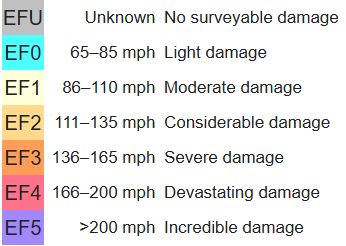
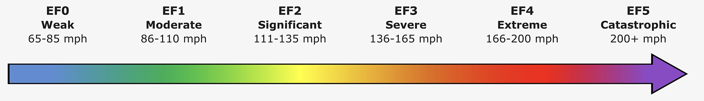
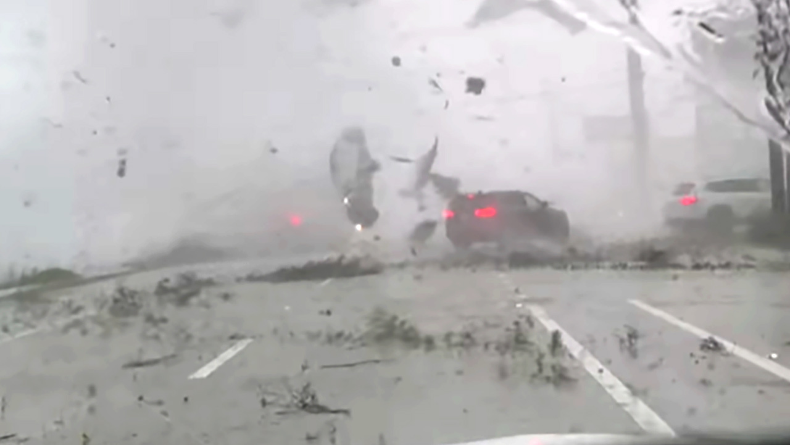

How Tornadoes kill you
Under all tornado scales, the Enhanced Fujita scale , also called EF-Scale, is one of the most popular scales used. It's a scale that rates tornado intensity based on the severity of the damage a tornado causes. It's used in countries, such as the United States, Brazil, France and also in other countries. The rating of a tornado is determined by conducting a tornado damage survey, which is a type of land survey conducted to determine the destruction a tornado caused. The scale is "Enhanced", since it's based on the original Fujita scale.


Many people are killed while inside their homes because the building cannot withstand the wind's pressure. The roof is usually the first thing that get's lifted. Once it is lifted, the walls lose their support and often collapse inward. This leads to crush injuries or suffocation under heavy materials like brick.
In strong tornadoes, such as EF3 or higher, the updrafts are powerful enough to lift people, cars, and even mobile homes into the air. Death usually occurs then upon impact when the person or vehicle is dropped back to the earth or slammed into another solid object.

The leading cause of death by tornadoes, is being struck by flying debris. When winds exceed 100 mph, everyday objects like pebbles, shards of glass, or even wooden planks start flying uncontrollably. Debris hitting someone at high speed can cause immense damage to the body and sinks the survival rate by a lot.
{kind=link}